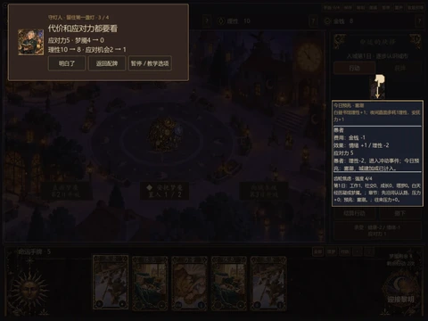

白天省下来的一张牌，入夜有另一种用法
白天用过的牌不会带进夜晚。留下的牌逆位后会改变效果和代价，所以结算前同时展示当前费用、资源变化和夜间危险，让你有依据决定这张牌该留还是该打。

TAPTAP MAKER / 个人 AI 游戏实践
塔罗卡牌策略 / 分支叙事
白天，你可以打出一张塔罗牌去工坊赚钱，也可以把它留到夜里对付梦魇。可一到夜晚，手里的牌会全部逆位，原本的好牌也可能要你付出新的代价。

TapTap 横屏公开测试
在咖啡街、钟楼、书馆和河畔选一个去处，搭配手牌，比较行动费用与结果。连过十五个昼夜，30 张牌和 45 个剧情选项会把你的手牌、城市发展与夜里的处境连在一起。
横屏画面来自 TapTap Maker 0.1.9 运行采集。标有 Windows 的画面来自对应版本的开发验收。
白天用过的牌不会带进夜晚。留下的牌逆位后会改变效果和代价，所以结算前同时展示当前费用、资源变化和夜间危险，让你有依据决定这张牌该留还是该打。
推荐旅程先给三张起始牌。守灯人带你选地点、放牌、确认行动，再在首夜指向应对预览。情绪、健康和金钱先出现，理性、社交和城建随旅程展开。

并排图卡让你先认出人物和行动，再比较费用与后果。结算继续沿用选中的插图，让资源变化能接回刚才做的决定。

Windows 开发版把休息、交谈和送货放在不同街区。夜里人流减少，街灯和店门随时间变化，经过咖啡馆的人会在门口错峰通行。

点击图片可查看原图。 多张画面可左右滑动，也可聚焦图库后使用方向键浏览。


TAPTAP / 游戏入口
手机版于 2026 年 10 月 30 日开放 TapTap 试玩。在客户端打开后，可从「渐进入城」跟守灯人过完第一个昼夜。